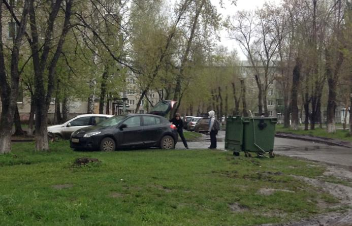

Я довольно плохо отношусь к людям, которые паркуют свои телеги на газонах. Дворы не приспособлены, понятно. Машину хочется — ясно. Кредиты доступны — знаю. Но парковать машину на газоне — плохо. При случае выражаю всегда хамоватым автовладельцам своё фи.
В один из дворов по семейным нуждам заезжаю каждый день. Там есть один автовладелец, который упорно ставил машину на газон. Его и дворник просил и жители, а он упорно продолжал и даже говорил неприличные слова. Мы с ним поговорили как-то, я ему говорил, что он не прав, он говорил, что поздно приезжает, ставить некуда. Уже с неделю находит место. Совпадение, думаю.
Сегодня на его месте стоял другой счастливый обладатель железной телеги. Я ехал и думал о жизни.
И тут моё внимание привлёк автомобиль Рено, стоявший на газоне, все колёса которого были спущены. Я стараюсь вести себя как журналист, поэтому немедленно расчехлил айпод. Сфотографировал.

Что характерно, владелица увидела меня и отреагировала странно, перекрестила несколько раз. Я подъехал справится о причинах её поведения. Она, конечно, была расстроена. Говорила, что бог мне судья, что это я спустил колёса и её ребёнок, которому нужно в школу из-за меня мокнет под дождём. Я предложил подвезти его, но она отказалась. Продолжая перекрещивать меня и говорить, что бог мне судья.